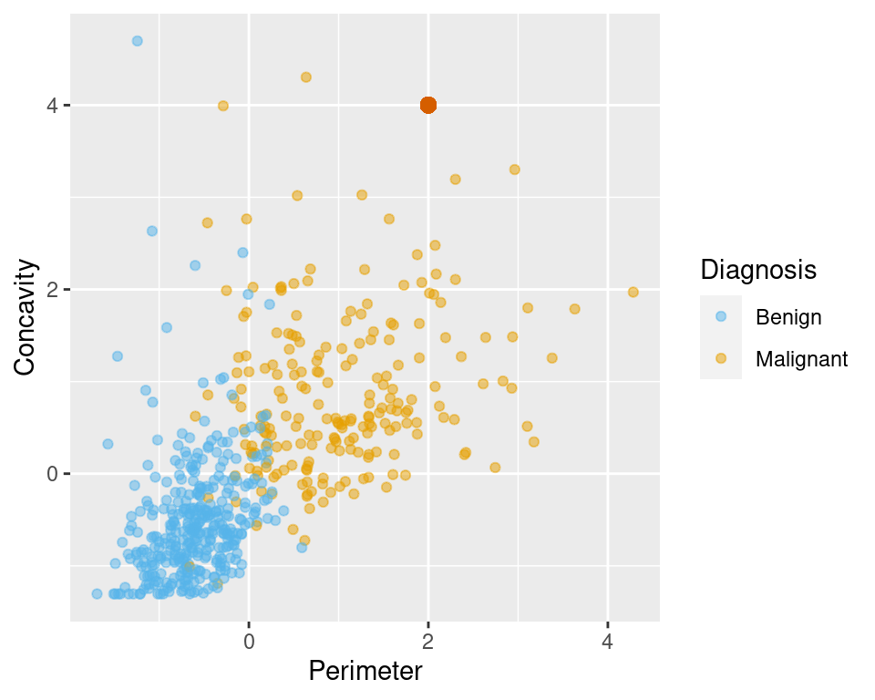
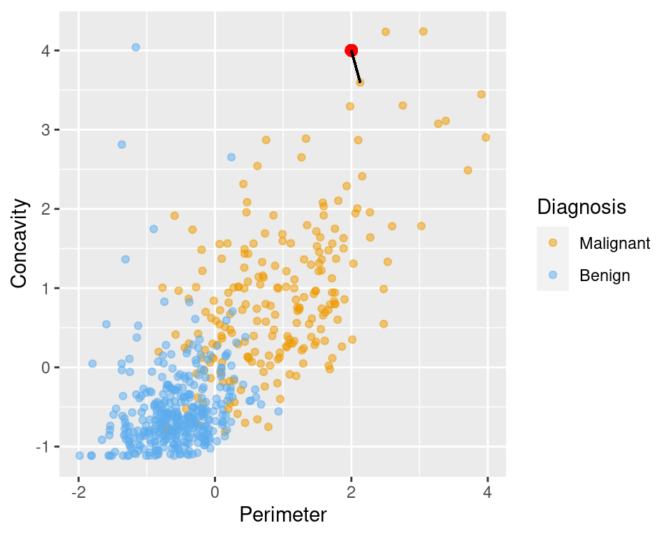
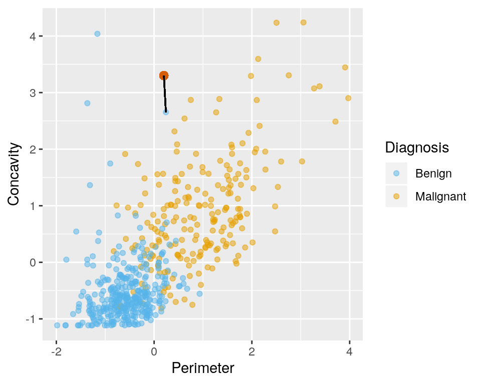
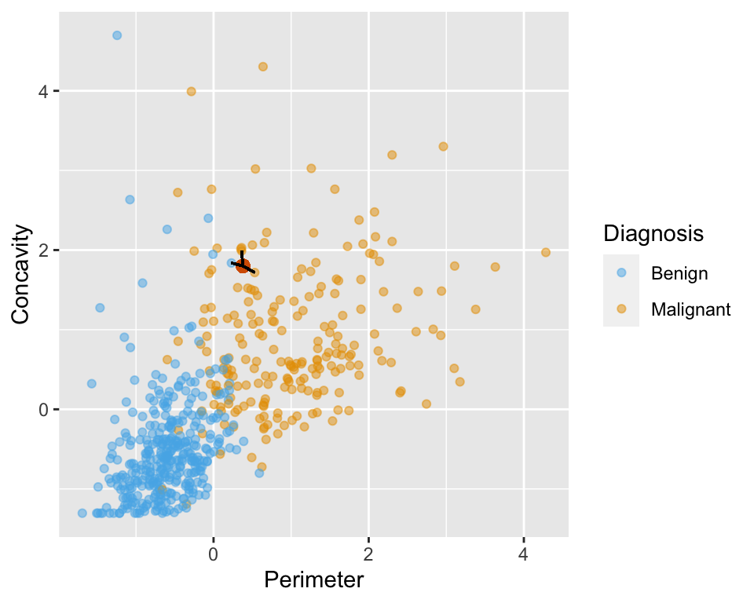
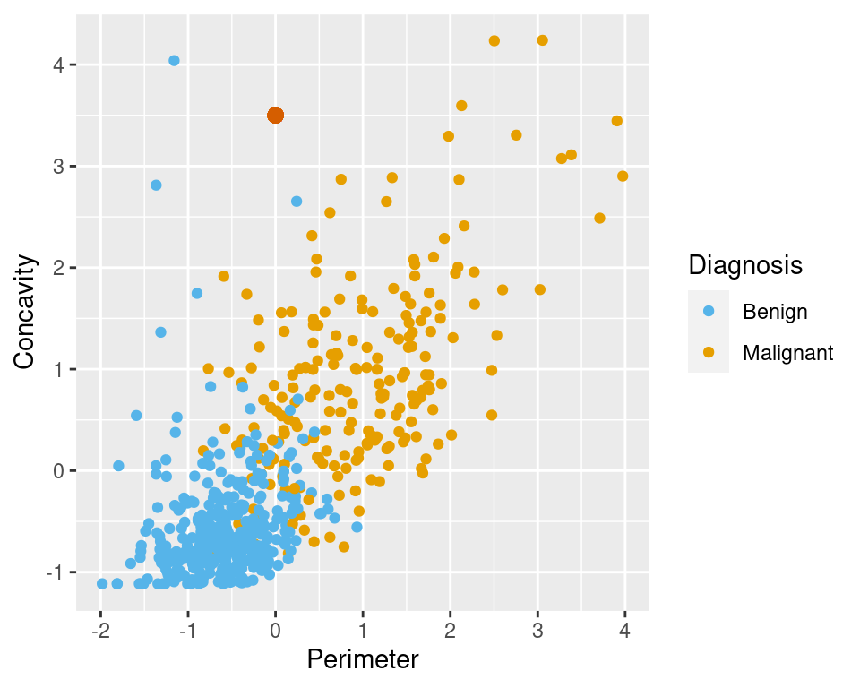
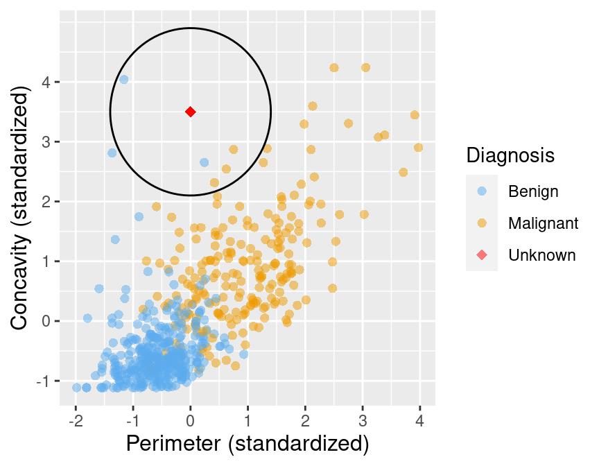

Chapter 6 Classification
6.1 Overview
This chapter serves as an introduction to classification using K-nearest neighbours (k-nn) in the case where we have two quantitative variables that we want to use to predict the class of a third, categorical variable.
6.2 Learning objectives
- Recognize situations where a simple classifier would be appropriate for making predictions.
- Explain the k-nearest neighbour classification algorithm.
- Interpret the output of a classifier.
- Compute, by hand, the straight-line (Euclidean) distance between points on a graph when there are two explanatory variables/predictors.
- Describe what a training data set is and how it is used in classification.
- In a dataset with two explanatory variables/predictors, perform k-nearest neighbour classification in R using
caret::train(method = "knn", ...)to predict the class of a single new observation.
6.3 Classification
In many situations, we want to learn how to make predictions based on our experience from past examples. For instance, a doctor wants to diagnose a patient as either diseased or healthy based on some observed characteristics, an email provider would like to assign a given email as “spam” or “non-spam”, or an online store wants to predict if an order is fraudulent (or not). These are all examples of classification tasks.
Classification is the problem of predicting a qualitative or categorical class/label for an observation (set of data collected from an object, such as a person or an email). It involves assigning an observation to a class (e.g. disease or healthy) on the basis of how similar they are to other observations that have already been classified. These already classified observations that we use as a basis to predict classes for new, unclassfied observations is called a training set. We call them a “training set” because we use these observations to train, or teach, our classifier so that we can use it to make predictions on new data that we have not seen previously.
There are many possible classifier methods that we could use to predict a qualitative or categorical class/label for an observation. These classification methods can perform binary classification, where only two classes are involved (e.g. disease or healthy patient), as well as multiclass classification, which involves assigning an object to one of several classes (e.g., private, public, or not for-profit organization). Here we will focus on a simple, and widely used method of classification called K-nearest neighbors, but other examples include decision trees, support vector machines and logistic regression.
6.4 Wisconsin Breast Cancer Example:
Let’s start by looking at some Breast Cancer data, which was obtained from the University of Wisconsin Hospitals, Madison from Dr. William H. Wolberg. Each row in the data set represents an observation which includes the tumour diagnosis (benign/non-cancerous or malignant/cancerous) and several other measurements about the tumour cells (e.g., cell nuclei texture, perimeter, etc.). Diagnosis of the tumour was determined by Physicians. The question here is whether we can use some, or all, of the measurements available to us about the tumour cells to do a good job of predicting whether a future tumour, that we don’t have a diagnosis from a Physician for, is benign or malignant.
Answering this question is important because traditional, non-data driven methods for tumour diagnosis are quite subjective and dependent upon how skilled and experienced the diagnosing Physician is. Furthermore, benign tumours are not normally dangerous, the cells stay in the same place and the tumour stops growing before it gets very large, whereas in malignant tumours, the cells invade the surrounding tissue and spread into nearby organs where they can cause serious damage (Learn more here). Thus it is important to quickly and accurately diagnose the tumour type to guide patient treatment protocols.
6.4.1 Data Exploration
As usual, we start by loading the necessary libraries for our analysis. We have learned about the tidyverse before. Today we’ll also be loading a new library, forcats that allows us to easily manipulate factors in R. Factors are a special categorical type of variable in R that are very helpful when doing statistical inference and machine learning with categorical variables.
The data file we need to read in is a plain vanilla csv with headers, and thus we can use the read_csv function with no additional arguments:
## # A tibble: 6 x 12
## ID Class Radius Texture Perimeter Area Smoothness Compactness
## <dbl> <chr> <dbl> <dbl> <dbl> <dbl> <dbl> <dbl>
## 1 8.42e5 M 1.89 -1.36 2.30 2.00 1.31 2.61
## 2 8.43e5 M 1.80 -0.369 1.53 1.89 -0.375 -0.430
## 3 8.43e7 M 1.51 -0.0240 1.35 1.46 0.527 1.08
## 4 8.43e7 M -0.281 0.134 -0.250 -0.550 3.39 3.89
## 5 8.44e7 M 1.30 -1.47 1.34 1.22 0.220 -0.313
## 6 8.44e5 M -0.165 -0.314 -0.115 -0.244 2.05 1.72
## # ... with 4 more variables: Concavity <dbl>, Concave_points <dbl>,
## # Symmetry <dbl>, Fractal_dimension <dbl>6.4.1.1 Variable descriptions
Breast tumours can be diagnosed by performing a biopsy, a process where tissue is removed from the body to discover the presence of a disease. Traditionally these procedures were quite invasive, but now fine needle asipiration is a type of biopsy that uses a thin needle to examine a small amount of tissue from the tumour. With this method, 10 different variables are typically measured of cell nuclei from a digital image of a fine needle aspirate (FNA) of a breast mass.

A magnified image of a malignant breast Fine Needle Aspiration image. White lines denote the boundary of the cell nuclei.
- ID number
- Class - diagnosis (M = malignant, B = benign)
- radius (mean of distances from center to points on the perimeter)
- texture (standard deviation of gray-scale values)
- perimeter
- area
- smoothness (local variation in radius lengths)
- compactness (\(perimeter^2 / area - 1.0\))
- concavity (severity of concave portions of the contour)
- concave points (number of concave portions of the contour)
- symmetry
- fractal dimension (\("coastline\: approximation" - 1\))
The “worst” (mean of the three largest values) values of these variable were computed for each image. As part of the data preparation, the data have been scaled (we will discuss what this means and why we do it in the next chapter).
Below we use glimpse to preview the data frame. This function is similar to head, but can be easier to read when we have a lot of columns:
## Observations: 569
## Variables: 12
## $ ID <dbl> 842302, 842517, 84300903, 84348301, 84358402...
## $ Class <chr> "M", "M", "M", "M", "M", "M", "M", "M", "M",...
## $ Radius <dbl> 1.8850310, 1.8043398, 1.5105411, -0.2812170,...
## $ Texture <dbl> -1.35809849, -0.36887865, -0.02395331, 0.133...
## $ Perimeter <dbl> 2.30157548, 1.53377643, 1.34629062, -0.24971...
## $ Area <dbl> 1.999478159, 1.888827020, 1.455004298, -0.54...
## $ Smoothness <dbl> 1.306536657, -0.375281748, 0.526943750, 3.39...
## $ Compactness <dbl> 2.61436466, -0.43006581, 1.08198014, 3.88997...
## $ Concavity <dbl> 2.10767182, -0.14661996, 0.85422232, 1.98783...
## $ Concave_points <dbl> 2.29405760, 1.08612862, 1.95328166, 2.173873...
## $ Symmetry <dbl> 2.7482041, -0.2436753, 1.1512420, 6.0407261,...
## $ Fractal_dimension <dbl> 1.93531174, 0.28094279, 0.20121416, 4.930671...We can see from the summary of the data above that Class is of type character. We are going to be working with Class as a categorical statistical variable so we will convert it to factor using the function as.factor.
Factors have what are called “levels”, which you can think of as categories. We can ask for the levels from the Class column by using the levels function. This function should return the name of each category in that column. Given that we only have 2 different values in our Class column, “B” and “M”, we only expect to get two names back. If we had 4 difference values in the column, we would expect to get 4 back. Note the use of unlist to between select and levels. This is because select outputs a data frame (even though we only select a single column), and levels expects a vector.
## [1] "B" "M"Before we start doing any modelling, Let’s explore out dataset. Below we use the tidyverse’s group_by + summarize function to see that we have 357 (63%) benign and 212 (37%) malignant tumour observations.
num_obs <- nrow(cancer)
cancer %>%
group_by(Class) %>%
summarize(n = n(),
percentage = n() / num_obs * 100)## # A tibble: 2 x 3
## Class n percentage
## <fct> <int> <dbl>
## 1 B 357 62.7
## 2 M 212 37.3Next, let’s draw a scatter plot to visualize the relationship between the perimeter and concavity variables. To avoid ggplot's default pallete, we define our own here and specify to use it in the scale_color_manual function. In that function we also make the category labels of “B” and “M” something more readable, “Benign” and “Malignant”, respectively.
# colour palette
cbPalette <- c("#56B4E9", "#E69F00","#009E73", "#F0E442", "#0072B2", "#D55E00", "#CC79A7", "#999999")
perim_concav <- cancer %>%
ggplot(aes(x = Perimeter, y = Concavity, color = Class)) +
geom_point(alpha = 0.5) +
labs(color = "Diagnosis") +
scale_color_manual(labels = c("Benign", "Malignant"), values = cbPalette)
perim_concavIn this visualization, we can see that the observations that are labelled as benign, typically fall in the the lower, left-hand side of the plot area. Whereas, the observations that are labelled as malignant typically fall in upper right-hand side of the plot. Suppose we have a new observation that is not in the current data set that we plotted and we do not have a Physician’s diagnosis for the tumour class. But what is we knew this new observation had a perimeter value of 1 and concavity value of 1. Could we use this information to classify that observation as benign or malignant? What about a new observation with perimeter value of -1 and concavity value of -0.5? What about 0 and 1? It seems like we can do this, at least visually. Now we will explore how we can use the K-Nearest Neighbour classification method to do this using R.
6.4.2 K-Nearest Neighbour Classifier
To classify a new observation as benign or malignant, we find some observations in the training set that are “nearest” to our new observation, and then use their diagnoses (benign or malignant) to make a prediction for the new observation’s diagnosis.
Let’s walk through an example; suppose we have a new observation, with perimeter of 2 and concavity of 4 (labelled in red on the scatterplot), whose diagnosis “Class” is unknown.

We see that the nearest point to this new observation is located at the coordinates (2.3, 3.2). The idea here is that if a point is close to one another in the scatterplot then the perimeter and concavity values are similar so we may expect that they would have the same diagnosis.

Suppose we have another new observation with perimeter 0.38 and concavity of 1.8. Looking at the scatterplot below, how would you classify this red observation? The nearest neighbour to this new point is a benign observation at (0.2, 1.8). Does this seem like the right prediction to make? Probably not if you consider the other nearby points…

So instead of just using the one nearest neighbour, we can consider several neighbouring points, say \(k = 3\), that are closest to the new red observation to predict its diagnosis class. Among those 3 closest points, we look at their class and use the majority class as our prediction for the new observation.
We see that the diagnoses of 2 of the 3 nearest neighbours to our new observation are malignant so we take majority vote and classify our new red observation as malignant.

Here we chose the \(k=3\) nearest observations, but there is nothing special about \(k=3\). We could have used \(k=4, 5\) or more, though we may want to choose an odd number to avoid ties. We will discuss more about choosing \(k\) in the next section.
6.4.2.1 Distance Between Points When There are two explanatory variables/predictors
How do we decide which points are “nearest” to our new observation? We can compute the distance between any pair of points using the following formula:
\[Distance = \sqrt{(x_a -x_b)^2 + (y_a - y_b)^2}\]
Suppose we want to classify a new observation with perimeter of -1 and concavity of 4.2. Let’s calculate the distances between our new point and each of the observations in the training set to find the \(k=5\) observations in the training data that are nearest to our new point.

new_obs_Perimeter <- -1
new_obs_Concavity <- 4.2
cancer %>% select(ID, Perimeter, Concavity, Class) %>%
mutate(dist_from_new = sqrt((Perimeter - new_obs_Perimeter)^2 + (Concavity - new_obs_Concavity)^2)) %>%
arrange(dist_from_new) %>%
head(n = 5)## # A tibble: 5 x 5
## ID Perimeter Concavity Class dist_from_new
## <dbl> <dbl> <dbl> <fct> <dbl>
## 1 859471 -1.24 4.70 B 0.553
## 2 84501001 -0.286 3.99 M 0.744
## 3 8710441 -1.08 2.63 B 1.57
## 4 9013838 -0.461 2.72 M 1.57
## 5 925622 0.638 4.30 M 1.64From this, we see that 3 of the 5 nearest neighbours to our new observation are malignant so classify our new observation as malignant. We circle those 5 in the plot below:

It can be difficult sometimes to read code as math, so here we mathematically show the calculation of distance for each of the 5 closest points.
| ID | Perimeter | Concavity | Distance | Class |
|---|---|---|---|---|
| 8.5947110^{5} | -1.24 | 4.7 | \(\sqrt{-1 - (-1.24))^2 + (4.2 - 4.7)^2}=\) 0.55 | B |
| 8.450100110^{7} | -0.29 | 3.99 | \(\sqrt{(-1 - (-0.29))^2 + (4.2 - 3.99)^2} =\) 0.74 | M |
| 8.71044110^{6} | -1.08 | 2.63 | \(\sqrt{(-1 - (-1.08))^2 + (4.2 - 2.63)^2} =\) 1.57 | B |
| 9.01383810^{6} | -0.46 | 2.72 | \(\sqrt{(-1 - (-0.46))^2 + (4.2 - 2.72)^2} =\) 1.57 | M |
| 9.2562210^{5} | 0.64 | 4.3 | \(\sqrt{(-1 - 0.64)^2 + (4.2 - 4.3)^2} =\) 1.64 | M |
6.4.2.1.1 Summary:
In order to classify a new observation using a k-nearest neighbor classifier, we have to do the follow steps:
- Step 1: Compute the distance between the new observation and each observation in our training set.
- Step 2: Sort the data table in ascending order according to the distances.
- Step 3: Choose the top \(k\) rows of the sorted table.
- Step 4: Classify the new observation based on majority vote.
6.4.3 K-Nearest Neighbours in R
We will use the k-nearest neighbour (k-nn) algorithm in R by making use of the caret (Classification And REgression Training) package. caret contains a set of tools to help the process of making predictive models. Why do we now switch the using caret to perform k-nn as opposed to just writing the code to do it ourselves as we did above? Well, first, our code would have to get a bit more complicated to predict the classes for multiple new observations. Second, our code would also have to get a bit more complicated as we add more variables to our model. Thus for those two reasons, it makes sense to use the caret package to keep our code simple, readable and accurate (the less we type, the less mistakes we are likely to make).
We start off by loading the caret library:
## Loading required package: lattice##
## Attaching package: 'caret'## The following object is masked from 'package:purrr':
##
## liftLet’s again suppose we have a new observation with perimeter -1 and concavity 4.2, but its diagnosis is unknown (as in our example above). Suppose we again want to use the perimeter and concavity explanatory variables/predictors to predict the diagnosis class of this observation. Let’s pick out our 2 desired variables and store it as a new dataset named cancer_train
## # A tibble: 6 x 2
## Perimeter Concavity
## <dbl> <dbl>
## 1 2.30 2.11
## 2 1.53 -0.147
## 3 1.35 0.854
## 4 -0.250 1.99
## 5 1.34 0.613
## 6 -0.115 1.26Next, we store the diagnosis class labels (column Class) as a vector.
## Class1 Class2 Class3 Class4 Class5 Class6
## M M M M M M
## Levels: B MWe will use the function train(), where the argument x is a data frame object containing the explanatory variables/predictors, and y is a numeric or factor vector containing the outcomes/labels/classes. x and y should come from your original data frame and be in the same order. The argument tuneGrid should be a dataframe with possible “tuning values”. For now, just know that this is where we will specify our \(k\) (the number of nearest neighbours) and we will use \(k =5\) (we will discuss how to choose \(k\) in a later section). We will use “knn” as our method. Note - the caret package expects data.frames and not tibbles (which are special kind data frames). This is a bit annoying, and I expect this to change in the future, but for now we have to change tibbles to data.frames when using caret.
k <- data.frame(k = 5)
model_knn <- train(x = data.frame(cancer_train), y = cancer_labels, method='knn', tuneGrid = k)Now we can create a data.frame with our new observation and predict the label of the new observation using the predict function:
## [1] M
## Levels: B MOur model classifies this new observation as malignant. How do we know how well our model did? In later sections, we will discuss ways to evaluate our model.
6.4.4 More than two explanatory variables/predictors
So far we have seen how to build a classifier based on only explanatory variables/predictors, but we can use the k-nearest neighbours classifier in higher dimensional space. Let’s make a scatterplot with 3 variables instead of 2:
##
## Attaching package: 'plotly'## The following object is masked from 'package:ggplot2':
##
## last_plot## The following object is masked from 'package:stats':
##
## filter## The following object is masked from 'package:graphics':
##
## layoutNormally we recommend against 3D plots, but here for learning purposes we want to illustrate what happens when we go to higher dimensions.
Each explanatory variable/predictor can give us new information to help create our classifier. The distance formula for 3-dimensions is \[Distance = \sqrt{(x_a -x_b)^2 + (y_a - y_b)^2 + (z_a - z_b)^2}\] We can generalize for n-dimensions by
- summing up the squares of the differences between each individual coordinate
- taking the square root of the sum